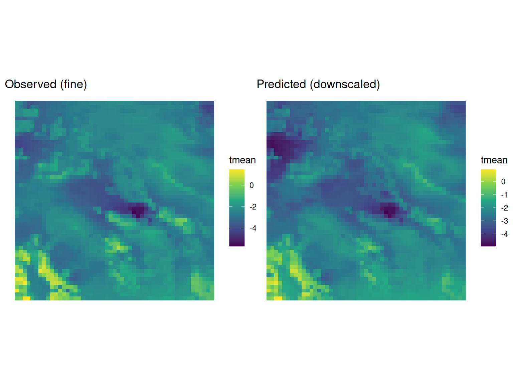

Overview
tidyeof supports statistical downscaling via Canonical Correlation Analysis (CCA). The workflow is:
- Extract EOF patterns from both predictor (coarse) and response (fine) fields
- Couple them with CCA to find correlated modes of co-variability
- Predict fine-scale fields from new coarse-scale data
This vignette demonstrates the full downscaling pipeline.
Setup: predictor and response data
For this vignette, we create a synthetic downscaling problem. The “fine” field is the bundled PRISM temperature data. The “coarse” field is derived by spatially aggregating it (simulating a coarse-resolution model).
# Fine-resolution "observations"
fine <- system.file("testdata/prism_test.RDS", package = "tidyeof") |>
readRDS()
# Coarse-resolution "model" -- aggregate to ~5x coarser grid
# In practice, this would be a GCM or reanalysis product
coarse <- fine |>
st_warp(cellsize = 0.2, method = "average", use_gdal = TRUE, no_data_value = -99999) |>
setNames(names(fine)) |>
st_set_dimensions("band",
values = st_get_dimension_values(fine, "time"),
names = "time")
p1 <- ggplot() + geom_stars(data = fine[,,,1]) +
scale_fill_viridis_c(na.value = NA) + coord_sf() + theme_void() + ggtitle("Fine (PRISM)")
p2 <- ggplot() + geom_stars(data = coarse[,,,1]) +
scale_fill_viridis_c(na.value = NA) + coord_sf() + theme_void() + ggtitle("Coarse (aggregated)")
patchwork::wrap_plots(p1, p2)
Step 1: Extract patterns
Extract EOF patterns from both fields. The number of modes k controls how much spatial detail is retained. More modes capture finer structure but risk overfitting in the CCA step.


Step 2: Couple with CCA
couple() finds the linear combinations of predictor and response PCs that are maximally correlated. The k argument controls how many CCA modes to retain.
coupled <- couple(pred_pat, resp_pat, k = 3)
coupled── Coupled Patterns Object ─────────────────────────────────────────────────────Method: ccaCCA modes retained: 3Canonical correlations: 1, 1, and 0.998Predictor patterns: 5 PCsResponse patterns: 5 PCsDiagnostics
Inspect the canonical correlations – these indicate the strength of the predictor-response relationship for each mode:
get_canonical_correlations(coupled) mode correlation correlation_squared
1 1 0.9999999 0.9999999
2 2 0.9999594 0.9999187
3 3 0.9981142 0.9962319
plot(coupled, type = "correlations")
Visualize canonical variates (the optimally-correlated time series from each side):
plot(coupled, type = "canonical", side = "both")
Canonical spatial patterns show what spatial structures in the predictor correspond to what structures in the response:
plot(coupled, type = "canonical_patterns", side = "both")
The combined view shows everything together:
plot(coupled)
Step 3: Predict
predict() takes new coarse-resolution data and produces a fine-resolution prediction. Internally it: projects the new data onto predictor EOFs, applies the CCA transform, multiplies by response EOFs, and adds the response climatology.
# Use the training data as a test (perfect predictor scenario)
predicted <- predict(coupled, coarse)
# Compare a single time step
t_idx <- 12
p1 <- ggplot() + geom_stars(data = fine[,,,t_idx]) +
scale_fill_viridis_c(na.value = NA) + coord_sf() + theme_void() +
ggtitle("Observed (fine)")
p2 <- ggplot() + geom_stars(data = predicted[,,,t_idx]) +
scale_fill_viridis_c(na.value = NA) + coord_sf() + theme_void() +
ggtitle("Predicted (downscaled)")
patchwork::wrap_plots(p1, p2)
Amplitudes only
If you don’t need the full spatial reconstruction (e.g., for diagnostics), set reconstruct = FALSE to get predicted response amplitudes directly:
# A tibble: 6 × 6
time PC1 PC2 PC3 PC4 PC5
<date> <dbl> <dbl> <dbl> <dbl> <dbl>
1 2017-01-01 -770. 69.4 0.513 2.83 0.180
2 2017-02-01 -414. 19.1 -0.697 -0.547 -0.0735
3 2017-03-01 -145. -21.1 1.01 0.996 0.108
4 2017-04-01 -138. -31.2 -3.73 -6.82 -0.590
5 2017-05-01 137. -20.6 -2.87 -5.15 -0.445
6 2017-06-01 427. -6.58 -1.56 -2.68 -0.230 Common patterns for multi-source downscaling
When downscaling across multiple data sources (e.g., multiple reanalyses or model runs), use common_patterns() to extract shared EOF patterns. This ensures all sources are projected into the same EOF space, making their amplitudes directly comparable.
# Simulate two "sources" by splitting the time series
times <- st_get_dimension_values(coarse, "time")
source_a <- filter(coarse, time <= times[18])
source_b <- filter(coarse, time > times[18])
cpat <- common_patterns(list(a = source_a, b = source_b), k = 4, weight = TRUE)
cpat── Common Patterns Object ──────────────────────────────────────────────────────Sources: "a" and "b"Shared EOF modes: 4── Time steps per source ──a: 18b: 18── Processing Options ──Scale: TRUERotate: FALSEMonthly: FALSEWeight: TRUEEach source gets its own patterns object with source-specific amplitudes and climatology, but shared EOF spatial patterns:
# The spatial patterns are identical; only amplitudes and climatology differ
cpat$a$eofsstars object with 3 dimensions and 1 attribute
attribute(s):
Min. 1st Qu. Median Mean 3rd Qu. Max.
tmean -0.2334799 -0.05031055 0.03787486 0.02307869 0.09097917 0.2537912
dimension(s):
from to offset delta refsys point values x/y
x 1 11 -118 0.2 NAD83 FALSE NULL [x]
y 1 11 43.98 -0.2 NAD83 FALSE NULL [y]
PC 1 4 NA NA NA NA PC1,...,PC4
cpat$b$eofsstars object with 3 dimensions and 1 attribute
attribute(s):
Min. 1st Qu. Median Mean 3rd Qu. Max.
tmean -0.2334799 -0.05031055 0.03787486 0.02307869 0.09097917 0.2537912
dimension(s):
from to offset delta refsys point values x/y
x 1 11 -118 0.2 NAD83 FALSE NULL [x]
y 1 11 43.98 -0.2 NAD83 FALSE NULL [y]
PC 1 4 NA NA NA NA PC1,...,PC4 You can then couple one source’s patterns with fine-scale observations, and predict using another source’s patterns via the predictor_patterns argument:
Next steps
- See
vignette("cross-validation")for tuningk_pred,k_resp, andk_cca - The
reconstruct()function can also be used standalone for EOF-based field reconstruction (seevignette("eof-analysis"))
References
- Barnett, T.P. & Preisendorfer, R. (1987). Origins and levels of monthly and seasonal forecast skill for United States surface air temperatures determined by canonical correlation analysis. Monthly Weather Review, 115(9), 1825-1850.
- Bretherton, C.S., Smith, C., & Wallace, J.M. (1992). An intercomparison of methods for finding coupled patterns in climate data. Journal of Climate, 5(6), 541-560.
- von Storch, H. & Zwiers, F.W. (1999). Statistical Analysis in Climate Research. Cambridge University Press.